施工
国産、輸入車問わずチューニング対応可能です。
ECU は mbFAST の代理店。
施工の記録大阪・摂津 カスタム＆サポート
REBOOT TIPO より
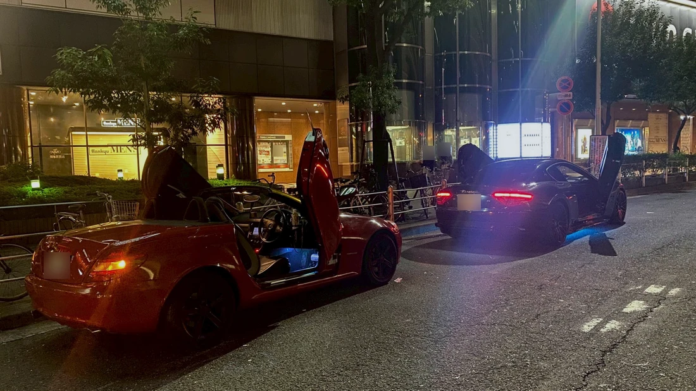
大切な車をもっと好きになるREBOOT TIPOカスタム＆サポート！
他社で断られた相談や入庫を断られたカスタム車両も大歓迎です！弊社でしかできないカスタム、弊社だからできるカスタムどんなカスタムでも是非一度お問い合わせください！
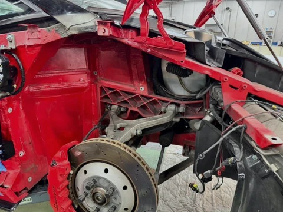
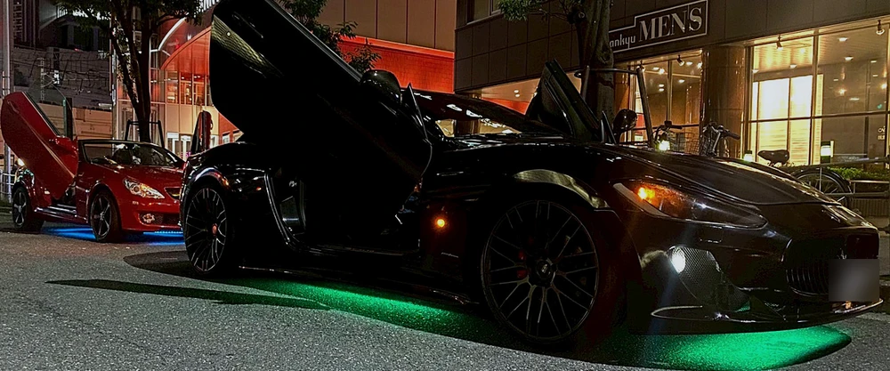
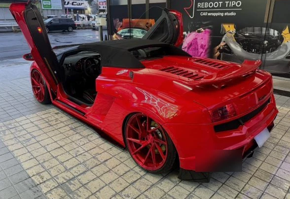
弊社が一から製造しているワンオフのガルウィングパーツで仕上げております！
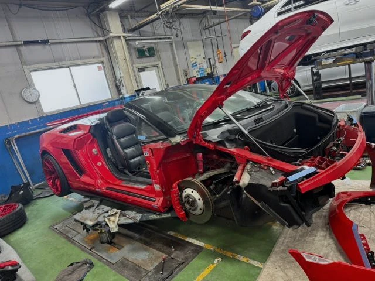
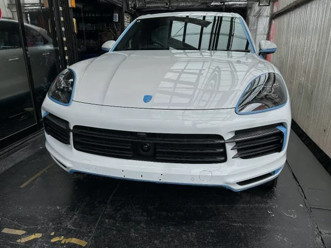
カスタム後のメンテナンスもさせていただきます！
ガルウィング施工後には定期的なメンテナンスを行う必要がありますが専門店として数々の経験と知識がございますのでアフターサービスも当社へお任せいただければサポート致します。国産、輸入車問わず様々な車種の施工実績がございますのでどんなお車でもご相談ください！
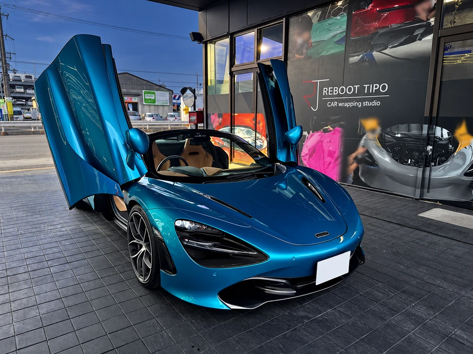
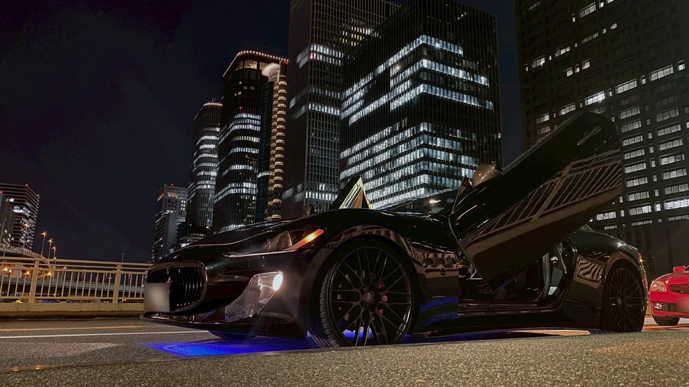
乗り降りがしやすい、デザイン性が高い、視覚的にインパクトがある
メリットも高く、とにかくカッコイイ ドレスアップ
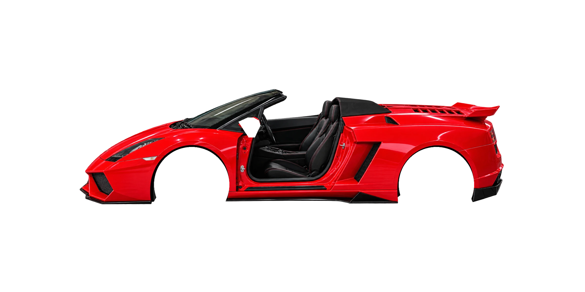
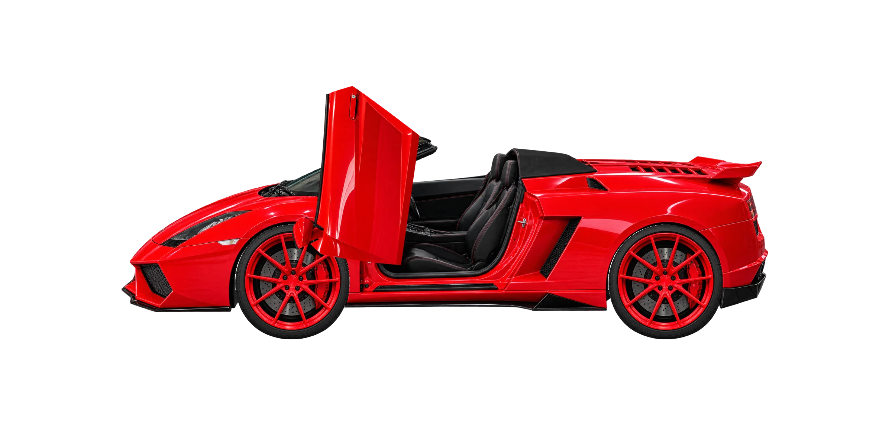
REBOOT TIPOが施工する「ガルウィングキット」はそれぞれの車種に合わせて設計をしておりますので、乗り降りもスムーズでナチュラルかつゴージャスなカスタマイズを行っております。
施工の記録をもっと見る
施工の記録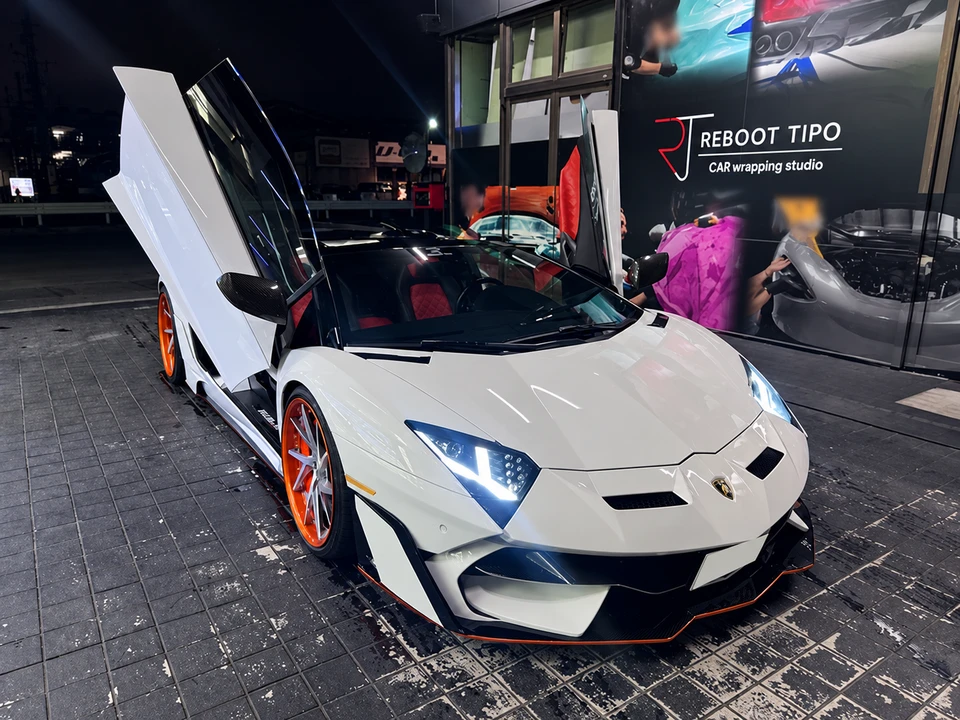
グーネットの販売店の口コミ（評価 5、16 件）から
「ローンもわかりやすくご説明して頂きとても親切でした」
「ネットにて欲しい車を見つけて実物を見に行き、ほぼ即決でした」
「とても親切な対応をして頂き、スムーズなお取引きができました」
「とても丁寧な対応ありがとうございました」
「検討から納車までの連絡がとてもスムーズで安心して事を進めることが出来ました」
「とても丁寧に説明してもらい、迅速な対応もしてもらい凄く良かったです」
「納車までスピーディーかつ丁寧な対応で満足してます」
「この度の購入に際し、親切、丁寧に対応して頂きとても感謝しています」